Nov 22, 2016
GUILD WARS 2 LS EPISODE 3 WALKTHROUGH
Bitterfrost Frontier
Upon arriving at Bitterfrost Frontier I found myself in a cold riverway that has been frozen over. Tall trees loom in the background and there are giant braziers to light. The braziers seem to protect me from the raging blizzard and melt frozen objects. Interesting.

My quest marker indicated that I should find Sorrow's Eclipse Sanctuary and speak to its leaders.

A kodan and a quaggan. Coo!

They told me that I must create an elixir that will allow me to penetrate the heart of the bitter cold.
Elixir
The ingredients I needed were winterberries, eggshells, suet, a fire stone, and a hot spring.

I found winterberries from foraging the forest areas and suet from the monsters nearby. There is an incubator near Woomulla where I placed eggs to convert to eggshells.

A cave to the northeast of the forest is where I went next.

Here I spoke to a Hooga Dizdiz about the fire stone. The grawl gave me a stone for doing a few trivial tasks.

The final step is to cook the elixir in the region's hottest hot spring the locals guided me in the right direction.

HOT!
The Bitter Cold
After brewing the elixir I made my way to the bitter cold area of the map and drank the potion. A large canyon laid before me.
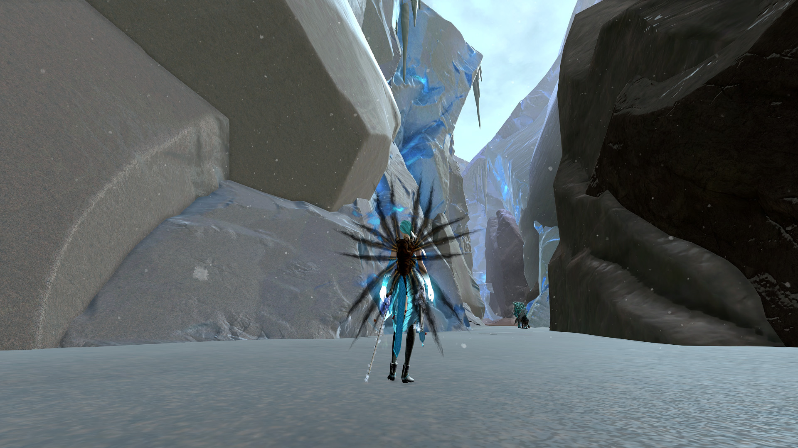I climbed a few plateaus and glided to this mechanism that melted the waterfall revealing a cave.
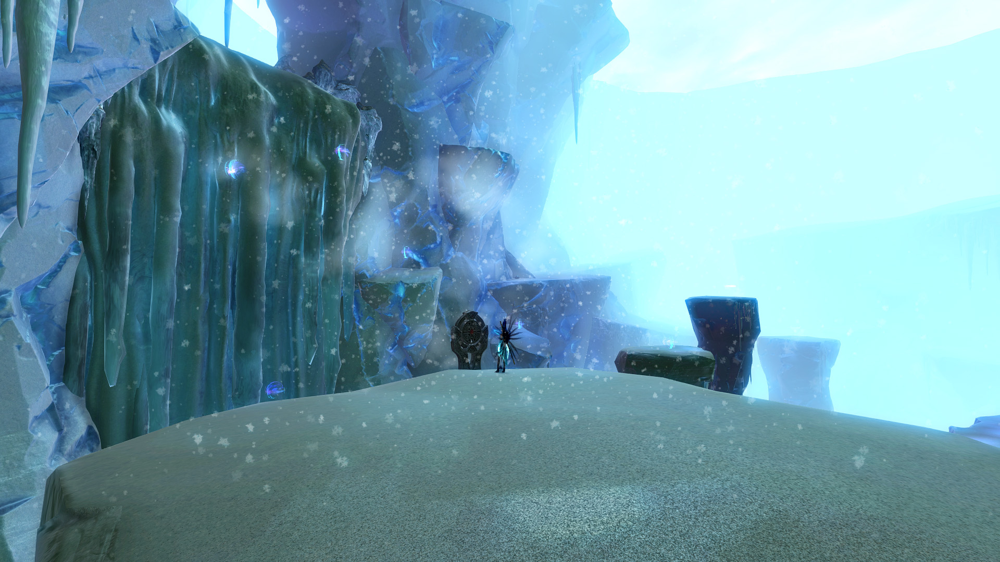Oh fun a boss monster!
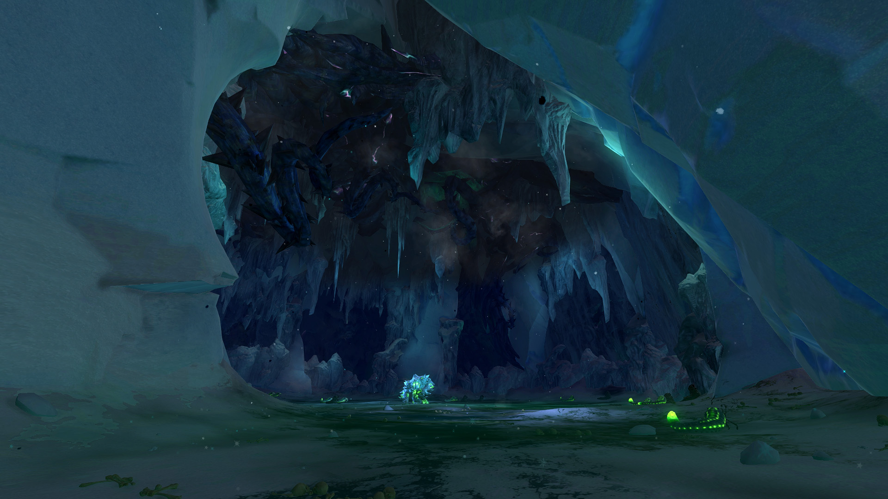As I fought the abomination I realized that it was immune to damage until I lured it to the cave bugs where their juices made the beast vulnerable.
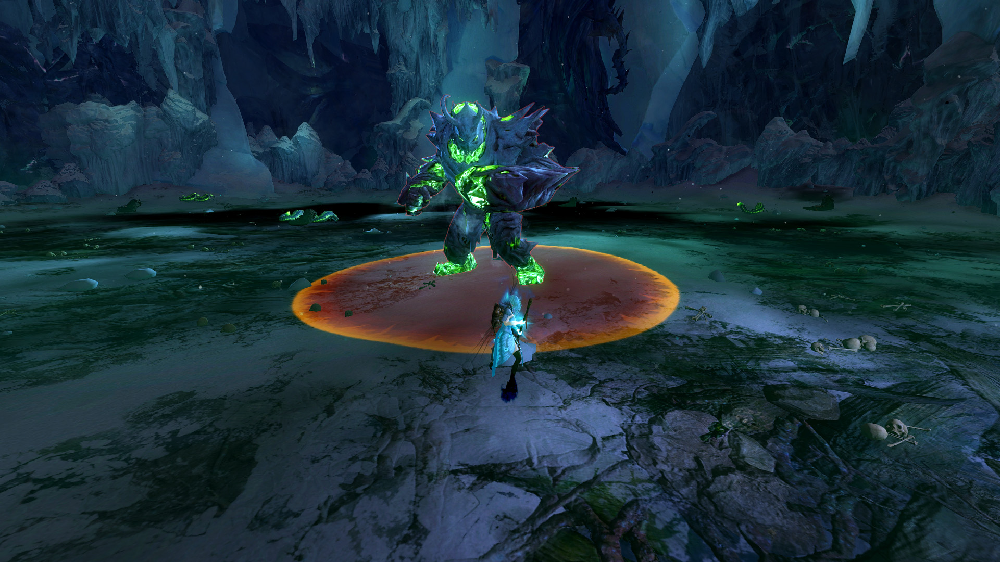Easy.
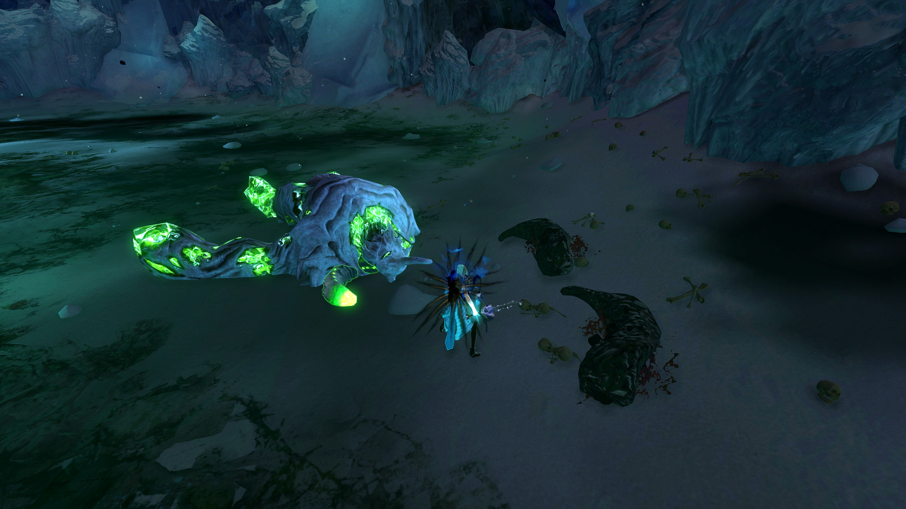Now I can retrieve a sample of the abomination for Taimi. I returned to Sorrow's Eclipse and spoke with Deep Water.
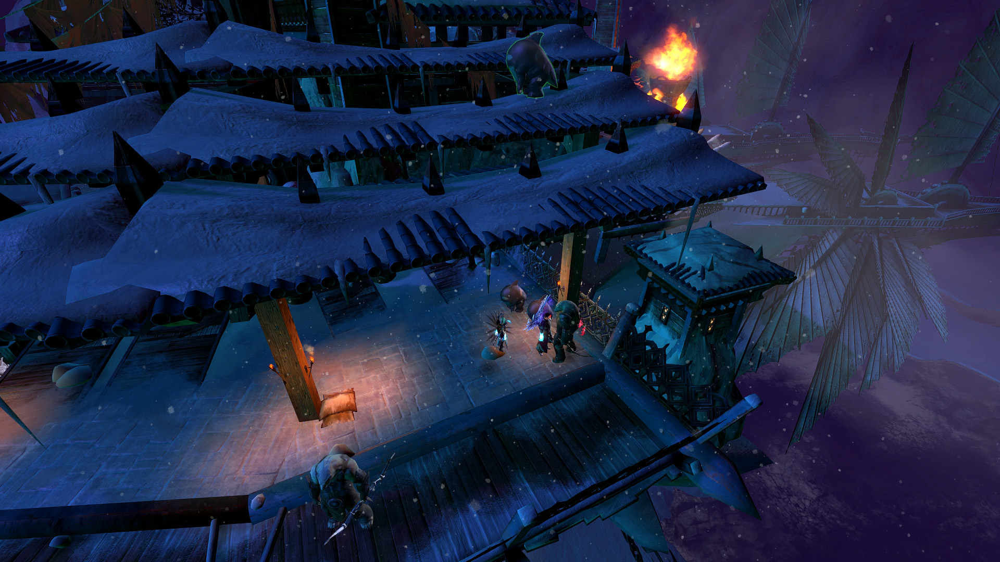Frozen Out
Deep water told me that Braham and Rox were spotted entering a cave to the south.
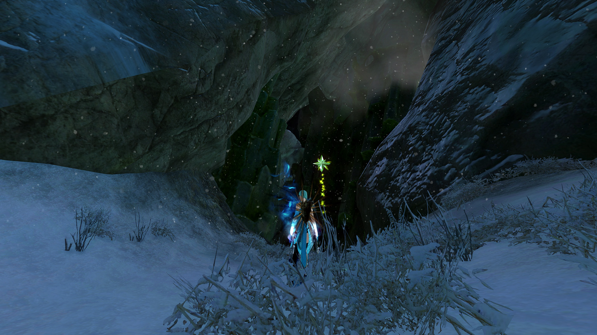I caught up to my friends and we treked through the cavern in search of a scroll that makes Jormag and its minions weakened.
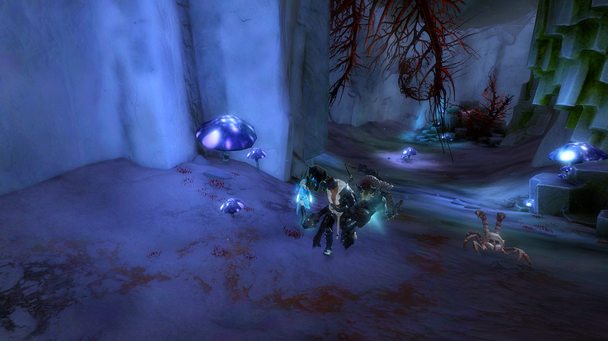We fought hoards of creatures and minions.
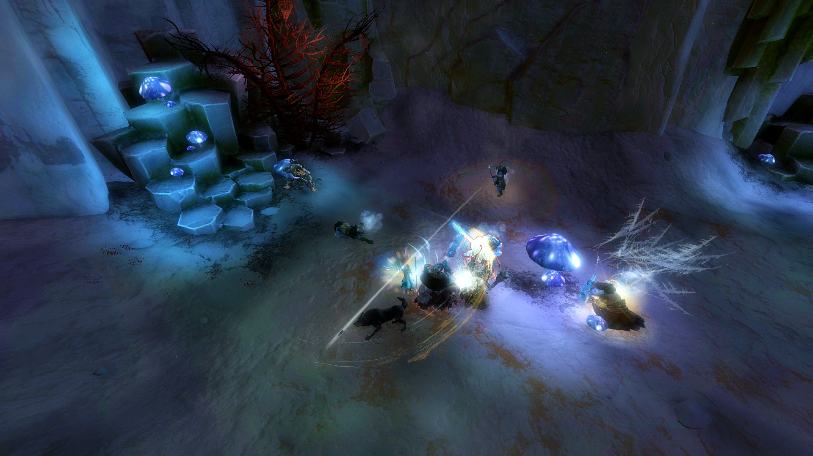Eventually we ended up in a large enclosure where some strange ritual was taking place.
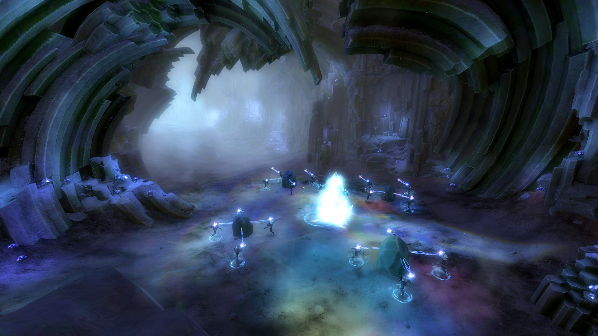To take the boss down I had to get the beast to run over the minions protecting it. It allowed Braham to use the scroll which removed its protection.
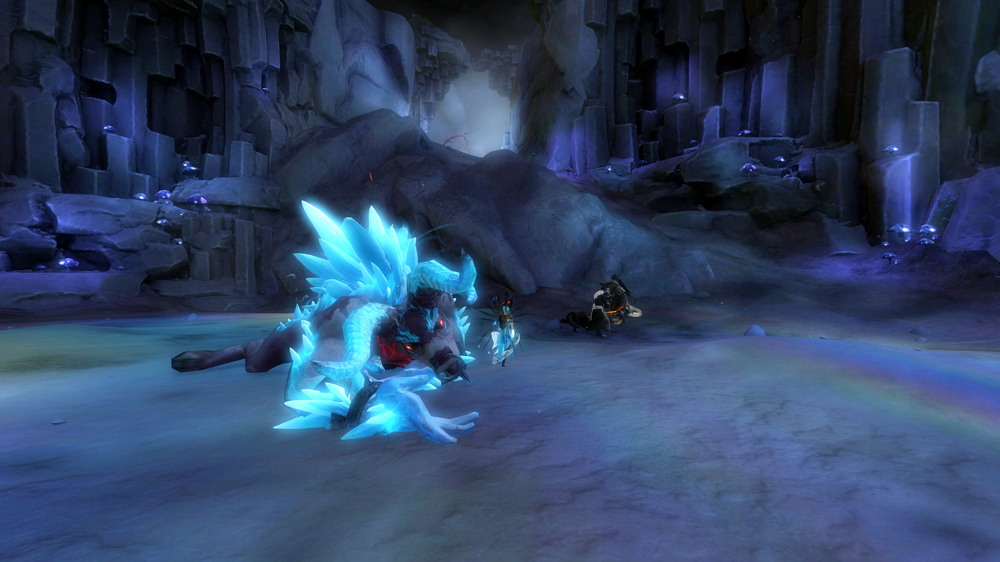"Raid boss" down.